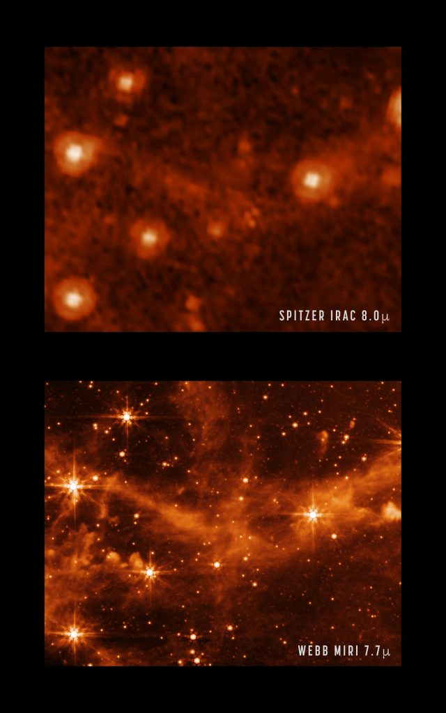

ဒီ အာရုံခံ ကိရိယာ ၄ ခု အနက်က အအေးဆုံး အခြေအနေမှာ ထားပြီး အသုံးပြု ရတဲ့ အင်ဖရာရက် အာရုံခံ ကင်မရာ (Mid Infrared Instrument, MIRI) ကို အသုံးပြုပြီး စမ်းသပ် ရိုက်ကူးထားတဲ့ ကြည်လင် ပြတ်သားလှတဲ့ ဓါတ်ပုံကို နာဆာက မေလ ၉ ရက်နေ့က ထုတ်ပြန် လိုက်ပါတယ်။
MIRI ရဲ့ စမ်းသပ် ဓါတ်ပုံဟာ လှိုင်းအလျား ၇.၇ မိုက်ကရွန် နဲ့ ရိုက်ကူး ထားတာ ဖြစ်ပါတယ်။ ဒီ လှိုင်းအလျားဟာ အနီအောက် ရောင်ခြည် ခွင်ရဲ့ အလယ်ပိုင်း လောက်မှာ ရှိတဲ့ လှိုင်းအလျား ဖြစ်ပါတယ်။
ဒီ ဓါတ်ပုံဟာ မစ်ကီးဝေး ဂလက်ဆီ နဲ့ မလှမ်းမကမ်းမှာ ရှိနေတဲ့ ကြယ်စု အသေးလေး ဖြစ်တဲ့ မဂျဲလန် တိမ်တိုက်ကြီး (Large Magellanic Cloud) ကို ရိုက်ကူးထားတဲ့ ဓါတ်ပုံ ဖြစ်ပါတယ်။
ဒီ နာဆာက ထုတ်ပြန်တဲ့ ဓါတ်ပုံမှာ အရင်က နာဆာရဲ့ စပစ်ဇာ တယ်လီစကုပ် (NASA’s Spitzer Space Telescope’s Infrared Array Camera) ကနေ လှိုင်းအလျား ၈.၀ မိုက်ကရွန် မှာ ရိုက်ကူးထားတဲ့ ဓါတ်ပုံနဲ့ နှိုင်းယှဉ် ပြထားတာကို တွေ့ကြရမှာ ဖြစ်ပါတယ်။
စပစ်ဇာ တယ်လီစကုပ် ကြီးကို ယခု အချိန်မှာ အနားပေး လိုက်ပြီး ဖြစ်ပါတယ်။ ဒီ တယ်လီ စကုပ်ကြီးဟာ အနား မပေးမီက အင်ဖရာရက် ကင်မရာကို အသုံးပြုပြီး resolution ကောင်းတဲ့ ဓါတ်ပုံတွေ ရိုက်ကူး ပေးခဲ့တဲ့ တယ်လီ စကုပ်ကြီး ဖြစ်ပါတယ်။
ဂျိမ်စ်ဝက်ဘ် တယ်လီစကုပ် ကြီးရဲ့ ပိုမို အားကောင်းတဲ့ ကြေးမုံ မှန်တွေကို အသုံးပြုးပြီး ပိုမို ကြည်လင် ပြတ်သားတဲ့ ဓါတ်ပုံတွေကို ထုတ်ပေးနိုင် တာကို နာဆာက ထုတ်ပြန်တဲ့ ဓါတ်ပုံမှာ အထင်အရှား တွေ့မြင်နိုင်မှာ ဖြစ်ပါတယ်။
ဥပမာ ဂျိမ်းစ်ဝက်ဘ် ရဲ့ MIRI အင်ဖရာရက် ကင်မရာ ဓါတ်ပုံမှာ ကြယ်တွေ အကြားက ဓါတ်ငွေ့ တိမ်တိုက် (interstellar gas) တွေကို အသေးစိတ် မြင်တွေ့ရမှာ ဖြစ်ပါတယ်။

ဒီ ဂျိမ်းစ်ဝက်ဘ် တယ်လီစကုပ်ကြီး အစစ အဆင်သင့် ဖြစ်လို့ စတင် တာဝန် ထမ်းဆောင်တဲ့ အခါမှာ နက္ခတ် ပညာရှင် တွေအနေနဲ့ ကြယ်တွေနဲ့ ဂြိုဟ်တွေရဲ့ မွေးဖွား ဖြစ်ပေါ်မှု ဖြစ်စဉ်ကို အသေးစိတ် လေ့လာနိုင် တော့မှာ ဖြစ်ပါတယ်။
လက်ရှိ အချိန်မှာတော့ ဒီ တယ်လီ စကုပ်ကြီးဟာ သူ့မှာ တပ်ဆင်ထားတဲ့ ကိရိယာတွေကို တစ်ခုချင်း အသေးစိတ် စမ်းသပ်မှုတွေ ပြုလုပ် နေပါတယ်။ ဂျိမ်းစ်ဝက်ဘ် တယ်လီစကုပ် ကြီးဟာ ဒီ နွေရာသီ မကုန်မီ စတင် တာဝန် ထမ်းဆောင်နိုင် တော့မှာ ဖြစ်ပါတယ်။
Ref: MIRI’s Sharper View Hints at New Possibilities for Science | NASA